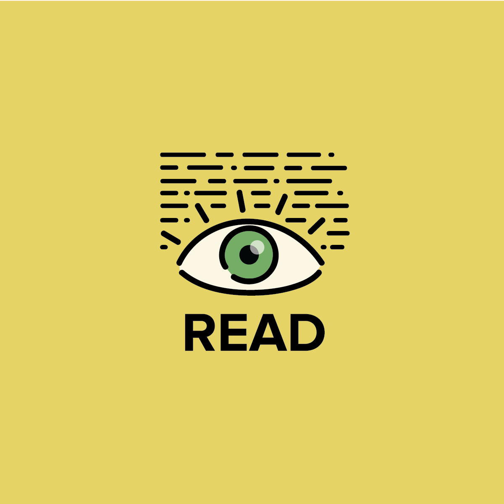

English Learning App
2017 | UX and UI design
For this project, we had 3 weeks to come up with an interactive experience that adressed an issue we were passionate about, and attempt to create a prototype of the experience. Inspired by what I learned in my Linguistic Psychology class, I sought to figure out difficulties of bilingual individuals whose first language was not english and then address it in a comprehesive and compassionate solution, which turned out be an English Learning App. The idea was to address pain points of individuals who already knew english, but wished to perfect it in some aspect.
Steps to create this app concept was first defining the problem and conducting research. I shared a survey on social media for bilingual individuals to
fill out. I also reaserched "competition" like other language apps and tried to discover how the overall experience could be improved.
Once I had a good idea of what I wanted the concept to be, I created a style tile to establish the look and feel. Mine was to feel friendly and organic and I
focused on four main categories of language: speech, hearing, reading and writing, that served as sort of these "mascots" for the project.
Then I developed wire frames and user flow of this conceptual app based on my findings, and this is where I developed the narrative. From this I created paper and digital interactive prototypes to test on people testing to see how people navigated through the narrative and where it was unclear. This part of the journey was very helpful in improving my app.
Testing my partial prototype on classmates. It is a rough and incomplete prototype, but you can play it here! (Best experienced on a smartphone)
In the end I presented my journey at the UC Davis Resaerch Conference. There I displayed my findings and I discussed what I would hope for the future of this experience. I even let people play with the prototype
I tested on people in the process.
All in all I nailed down a solid branding identity for the app,
but for future plans I wish to further develop the functionality and story, and to discover if it could make a difference for people trying to perfect their english. I wanted to discover other ways to
teach people how to improve their english in capacities where other language apps fell short. This is definitely a project that I'd love to fully develop and test in the future.